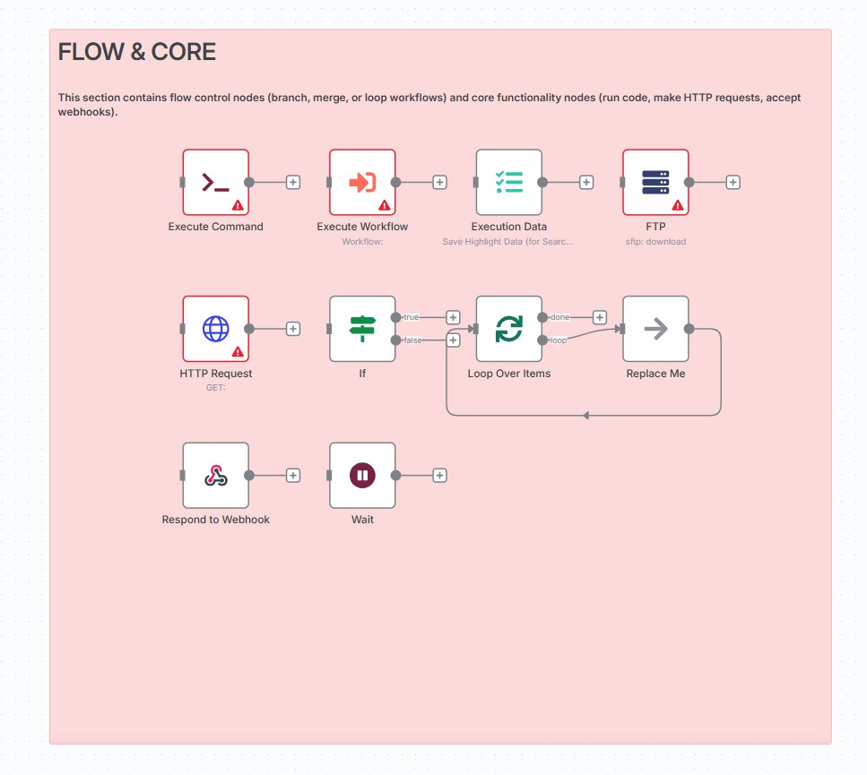

Execute Sub-workflow & When Executed by Another Workflow
Modularize automações complexas em componentes reutilizáveis e escaláveis - DRY (Don't Repeat Yourself) levado ao extremo
Sub-workflows no n8n permitem que workflows chamem outros workflows de forma modular, passando dados estruturados como inputs e recebendo outputs - transformando automações complexas em sistemas escaláveis e de fácil manutençêo.
🔧 Execute Sub-workflow Node
Permite que QUALQUER workflow invoque outro workflow dentro do n8n, passando dados estruturados e recebendo outputs do sub-workflow
🎯 When Executed by Another Workflow
Trigger que fica no INÍCIO do workflow chamado, especificando como ele processará inputs do workflow pai
💡 Arquitetura poderosa: Construa lógica de negócio core (como "Send Notification", "Clean Data", "Validate Input") ONCE e reutilize em quantos workflows precisar. Atualizações em um lugar propagam instantaneamente para todas as automações!

🔧 Funções Utilitárias Compartilhadas
Centralize error handling, formataçêo de dados, reporting ou API wrappers - todos os workflows podem usar
👥 Colaboraçêo em Equipe
Todos podem usar e contribuir para ferramentas modulares ao invés de copiar/colar nodes entre workflows
📈 Escalabilidade Extrema
Atualize lógica em UM lugar e propague melhorias/fixes instantaneamente para dezenas de workflows
🤖 Sistemas Agênticos
Sub-workflows funcionam como tools/actions invocadas por AI agents em orquestrações complexas
🏗️ Arquitetura Limpa
Mantenha workflows principais com 4-6 nodes, empurrando lógica complexa para sub-workflows
1. Criar Novo Workflow
Crie um novo workflow que atuará como sub-workflow (será chamado por outros)
2. Adicionar Trigger "When Executed by Another Workflow"
Coloque este trigger no INÍCIO do workflow. Escolha input mode: campos definidos, JSON example, ou "accept all data" para inputs flexíveis
3. Construir Lógica do Sub-workflow
Construa o workflow normalmente, processando inputs recebidos e gerando resultados
4. Configurar Permissões de Acesso
Ajuste "This workflow can be called by" nas settings para controlar acesso/segurança/colaboraçêo
1. Adicionar "Execute Sub-workflow" Node
No workflow pai, adicione o node Execute Sub-workflow onde precisa chamar outro workflow
2. Selecionar Source do Workflow
Database: referência por workflow ID | Local File: JSON pré-salvo | Parameter: JSON direto | URL: fonte remota
3. Mapear Input Data
Mapeie dados de input para corresponder ao que sub-workflow espera - mapeamento automático disponível se você declarou campos estruturados
4. Ativar e Testar
Ative workflow pai e teste execuçêo. Pode visualizar links de histórico de execuçêo entre parent e sub-workflow para debugging fácil
Cenário: Criar sub-workflow reutilizável para enviar relatórios ao Slack
⚡ Poder: Atualize formataçêo do Slack report em UM lugar, impacta Marketing, Sales e Support instantaneamente!
🛡️ Valide Inputs e Trate Erros
Cada sub-workflow deve validar inputs e tratar erros gracefully, especialmente com modo "accept all data"
📌 Pin Example Input Data
Durante desenvolvimento, prine dados de input de exemplo para debugging fácil e testes repetíveis
🏗️ Minimize Main Workflow Nodes
Idealmente 4-6 nodes no workflow principal - empurre lógica complexa para sub-workflows para arquitetura mais limpa
📝 Nomes Descritivos e Documentaçêo
Use nomes descritivos e documente workflows para que outros usuários possam facilmente descobrir módulos reutilizáveis
🔗 Execution History Links
Use links de histórico de execuçêo entre parent e sub-workflow para debugging rápido e rastreamento de fluxo
Modularizando com sub-workflows, n8n se torna uma plataforma para construir sistemas de automaçêo robustos, colaborativos e escaláveis - empowering você para escalar e manter automações complexas com facilidade.